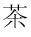

FRAGE 13:

Können gedruckte Musiknoten binär dargestellt werden?
Auch japanische und chinesische Zeichen wurden in Bitmuster übersetzt, und Computer können diese Symbole genauso leicht handhaben, wie ASCII. Unicode ist eine Vereinbarung eines internationalen Komitees, wie Zeichen mit 16 Bit dargestellt werden. Hier ist ein 16-Bit Muster 111110011111110 und hier ist das Zeichen, das es in Unicode darstellt: 
Angenommen, dass das internationale Komitee beschließt ein neues chinesisches Zeichen darzustellen. Wie könnten Sie dies tun? Leicht: sie suchen ein noch nicht verwendetes Bitmuster und weisen dem neuen Zeichen dieses Muster zu.
Die Zuordnung zwischen menschlichen Sprachsymbolen und Bitmustern ist willkürlich. Alles was zu tun ist, ist sicher zu sein, dass genügend Bit verwendet werden, um alle Symbole einer Sprache mit einem eindeutigen Bitmuster darstellen zu können.
Können gedruckte Musiknoten binär dargestellt werden?